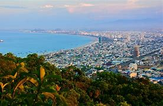

Da Nang is a class-1 municipality and the fifth-largest city in Vietnam by municipal population It lies on the coast of the South China Sea at the mouth of the Hàn River, and is one of Vietnam's most important port cities. As one of the country's five direct-controlled municipalities, it falls under the administration of the central government. Da Nang is the commercial and educational centre of Central Vietnam and is the largest city in the region. It has a well-sheltered, easily accessible port, and its location on National Route 1A and the North–South Railway makes it a transport hub.
It is within 100 km (62 mi) of several UNESCO World Heritage Sites, including the Imperial City of Huế, the Old Town of Hội An, and the Mỹ Sơn ruins. The city was known as Cửa Hàn during early Đại Việt settlement, and as Tourane (or Turon) during French colonial rule. Before 1997, the city was part of Quang Nam-Da Nang Province. On 1 January 1997, Da Nang was separated from Quảng Nam Province to become one of four centrally controlled municipalities in Vietnam. Da Nang is designated as a first class city, and has a higher urbanization ratio than any of Vietnam's other provinces or centrally governed cities.
Geologically, Da Nang is at the edge of a Paleozoic fold belt known as the Truong Son Orogenic Zone, whose main deformation occurred during the early Carboniferous period.[28] Da Nang's topography is dominated by the steep Annamite mountain range to the north and north-west, which features peaks ranging from 700 to 1,500 m (2,300 to 4,900 ft) in height, and low-lying coastal plains with some salting to the south and east, with several white sand beaches along the coast.
Da Nang has a tropical monsoon climate with two seasons: a typhoon and wet season from September to December and a dry season from January to August. Temperatures have an annual average of around 26 °C (79 °F). Cold waves can occasionally occur, although they are of short duration. Temperatures are highest between June and August with mean temperatures of 28 to 30 °C (82 to 86 °F)), and lowest between December and February (mean temperature of 18 to 23 °C (64 to 73 °F)). In Ba Na Hills, the temperatures are lower with an annual average of 20 °C (68 °F). The annual average for humidity is 81%, with highs between October and January (reaching 84–86%) and lows between June and August (reaching 75–77%). On average, Da Nang receives 2,153 mm (84.8 in) of rainfall. Rainfall is typically highest between September and November (ranging from 550 to 1,000 mm (22 to 39 in)) and lowest between February and April (ranging from 23 to 40 mm (0.91 to 1.57 in)).
Da Nang is susceptible to damage from typhoons that cross into the South China Sea. In 2006, the landfall of Typhoon Xangsane near the city of Hue caused 26 deaths in Da Nang, damaging and destroying homes, downing trees and power lines and flooding major streets. Authorities in Da Nang estimated the damage caused by Xangsane at around US$200 million, with more than 5,000 houses washed away, 166,000 homes damaged and 19 boats sunk. Three years later, Typhoon Ketsana made its landfall about 60 km (37 mi) south of Da Nang, again causing widespread flooding. Ketsana left eight people dead and 96 injured in Da Nang, and caused an estimated VND 495 billion (US$25 million) in damage. Shortly after the 2011 Tōhoku earthquake, which triggered a powerful tsunami, the People's Committee of Da Nang approved the installation of 10 early tsunami warning stations throughout the city, the first of their kind in Vietnam. Officials expected the stations would provide at least thirty minutes of warning in case of a tsunami.
Da Nang is the largest city in central Vietnam and one of the country's most important ports. The city is surrounded by mountains to the west, and the South China Sea to the east. Da Nang borders Thừa Thiên-Huế Province across the Hải Vân Pass to the north, along with the Quảng Nam Province to the south and west. It is 764 km (475 mi) south of Hanoi, and 964 km (599 mi) north of Ho Chi Minh City. The city has a total land area of 1,283.42 km2 (495.53 sq mi), of which 241.51 km2 (93.25 sq mi) are urban districts and 1,041.91 km2 (402.28 sq mi) are rural districts.
The tourism sector is a vital component of Da Nang's economy. Its status as a transportation hub for central Vietnam and its proximity to several UNESCO World Heritage Sites, including the Imperial City of Hue, the Old Town of Hoi An, and the My Son ruins fuels much of its tourist activity. Mỹ Sơn is an archaeological site dating back more than a thousand years, in Quang Nam. Located in a remote forested valley some 70 km west of Da Nang, this former capital and religious center of the Champa kingdom once contained in excess of 70 style temples and stupas. Although badly damaged by bombing raids in the 1960s, the site still has more than 20 structures and was declared a UNESCO World Heritage Site in 1999. Many statues, sculptures and reliefs recovered from Mỹ Sơn are kept in the Museum of Cham Sculpture, near the Hàn River in the heart of Da Nang. Dating from the fourth to the 14th centuries, the sensual artwork on these works depicts daily activities as well as Hindu and Buddhist religious themes. The Marble Mountains are rocky limestone outcrops jutting out of the beach just south of Da Nang. Paths lead to the top of the forested cliffs, providing views of Non Nuoc Beach and the South China Sea. The caves in the cliffs were originally inhabited by the Cham people. Later, the Nguyen Dynasty built numerous pagodas among the caves. The Marble Mountains are home to various artisans producing sculpture and artwork at its base at Non Nuoc Village.
Non Nuoc Beach is a white sandy beach on the outskirts of Đà Nẵng that is renowned for its history as an R&R destination for American troops during the Vietnam War. Today, the beach, along with Mỹ Khê beach to the north, are home to expensive resorts, surfing, and entertainment facilities. Ba Na Hills is a mountain resort with a 5 km-long cable car system which carries guests up to Ba Na's peak at 1487m above sea level. Son Tra Mountain, just some miles away from the city centre with some wild streams and resorts along the seaside.[citation needed] The central coastal city of Da Nang saw a significant growth in international tourist arrivals in 2017, according to the city's Department of Tourism. In 2017, about 6.6 million visitors came to Da Nang, up 19% over the previous year and 4.8% higher than its yearly target. The figure included 4.3 million domestic tourists, up 11.3% year-on-year. The central city earned over VND19.4 trillion (US$853.96 million) in revenue, an increase of 20.6% from 2016. Statistics also show that the city witnessed an impressive increase in the number of visitors by air which stood at over 1.58 million, up 74.4% while by-car visitors via Thailand and Laos was estimated at 14,120.